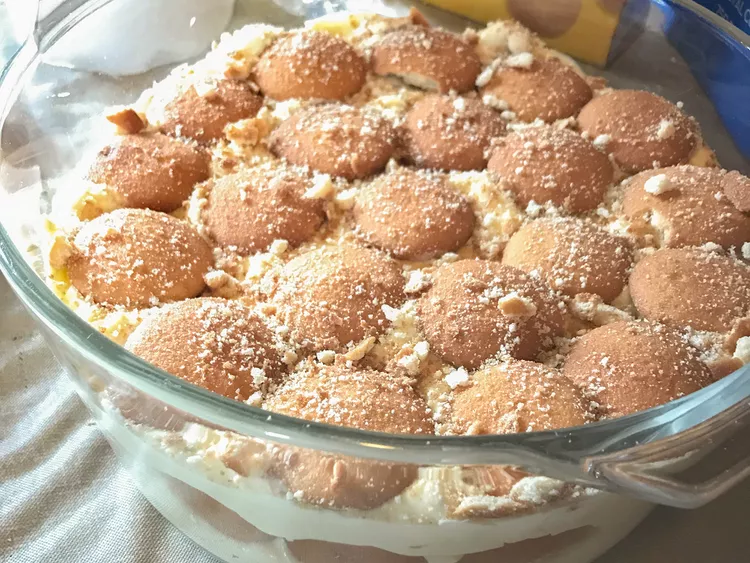

Aunt Betty's Banana Pudding

Description
This is a rich banana pudding recipe that my great aunt Betty created. It is very delicious. Great for cookouts or when company comes over.
Ingredients
- 2 (3.4 ounce) packages instant vanilla pudding mix
- 1 cup milk
- 1 (14 ounce) can sweetened condensed milk
- 1 (8 ounce) container sour cream
- 1 (8 ounce) container frozen whipped topping, thawed
- 6 bananas, sliced
- ½ (12 ounce) package vanilla wafers
Steps
- In a medium bowl, combine pudding mix and milk and stir until mix is dissolved. Refrigerate 15 minutes, until partially set.
- Stir condensed milk into pudding mixture until smooth. Fold in sour cream and whipped topping. Fold in bananas.
- Make a single layer of vanilla wafers in the bottom of a 9x13-inch dish. Spread pudding evenly over wafers. Crush remaining wafers and sprinkle on top. Refrigerate until serving.